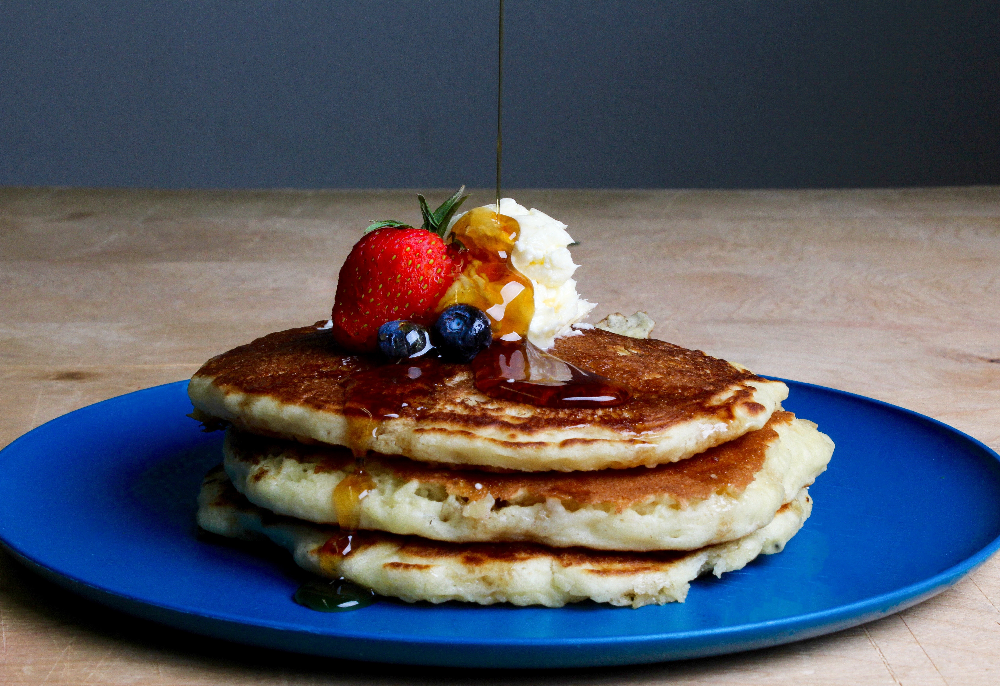

Pancakes

About
Pancakes are a great way to start the day. They are easy to make and require just a few ingredients. What's more, you can change the topping as you like, so you never have to eat the same pancakes over again.
You can top the pancakes with all kinds of fruit, maple syrup, chocolate sauce, whipped cream and berry syrup. You can also go for savory pancakes with for example poached eggs, spinach and crispy bacon.
Recipe below is for pancakes with fruit and maple syrup.
Ingredients
- 2 eggs
- 300 ml plant-based milk
- pinch of salt
- 250 g flour
- 1/2 teaspoon baking soda
- fresh fruit (strawberries, blueberries, banana)
- maple syrup
Steps
- Mix all the ingredients in a large bowl.
- Heat up the pan.
- Add few tablespoons of dough for one pancake.
- Cook the pancake for 3 minutes on each side.
- Chop the fruit to smaller pieces in the meantime.
- Place several pancakes on a plate, top with fruit and maple syrup.
Return to home page